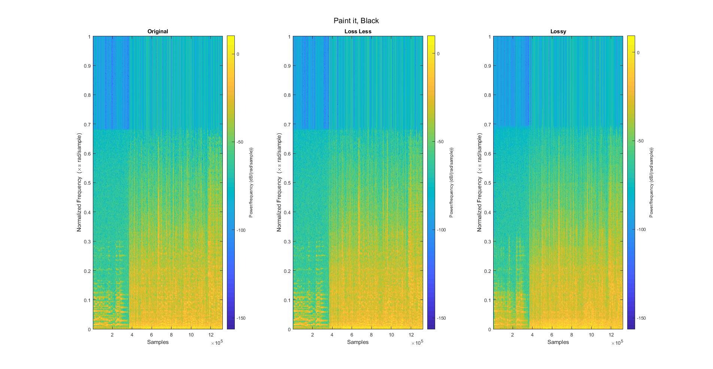
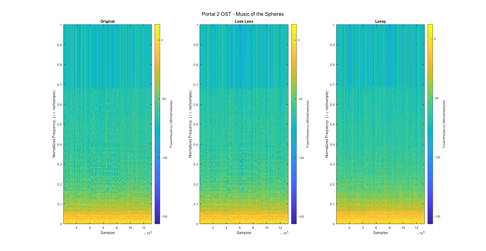

Contents
clear; clc; close all;
load('CD.mat')
load('PIB30.mat')
load('P2.mat')
fs = 44100;
thLossLess = inf*ones(1,32);
thresh = [5*ones(1,8),3*ones(1,8),2*ones(1,8),1*ones(1,8)];
Paint It, Black
LL_PIB30 = compress(PIB30, thLossLess, C, D);
cPIB30 = compress(PIB30, thresh, C, D);
fprintf('Paint it, Black\n')
figure('units','normalized','outerposition',[0 0 1 1])
sgtitle('Paint it, Black')
subplot(1,3,1)
spectrogram(PIB30, 1024, 'yaxis')
title('Original')
subplot(1,3,2)
spectrogram(LL_PIB30, 1024, 'yaxis')
title('Loss Less')
subplot(1,3,3)
spectrogram(cPIB30, 1024, 'yaxis')
title('Lossy')
fprintf('Playing Original\n')
soundsc(PIB30,fs)
pause(length(PIB30)/fs+1)
fprintf('Playing Lossless\n')
soundsc(LL_PIB30,fs)
pause(length(LL_PIB30)/fs+1)
fprintf('Playing Compressed\n\n')
soundsc(cPIB30,fs)
pause(length(cPIB30)/fs+1)
Paint it, Black
Playing Original
Playing Lossless
Playing Compressed

Portal 2 OST - Music of the Spheres
LL_P2 = compress(P2, thLossLess, C, D);
cP2 = compress(P2, thresh, C, D);
fprintf('Portal 2 OST - Music of the Spheres\n')
figure('units','normalized','outerposition',[0 0 1 1])
sgtitle('Portal 2 OST - Music of the Spheres')
subplot(1,3,1)
spectrogram(P2, 1024, 'yaxis')
title('Original')
subplot(1,3,2)
spectrogram(LL_P2, 1024, 'yaxis')
title('Loss Less')
subplot(1,3,3)
spectrogram(cP2, 1024, 'yaxis')
title('Lossy')
fprintf('Playing Original\n')
soundsc(P2,fs)
pause(length(P2)/fs+1)
fprintf('Playing Lossless\n')
soundsc(LL_P2,fs)
pause(length(LL_P2)/fs+1)
fprintf('Playing Compressed')
soundsc(cP2,fs)
pause(length(cP2)/fs+1)
Portal 2 OST - Music of the Spheres
Playing Original
Playing Lossless
Playing Compressed
